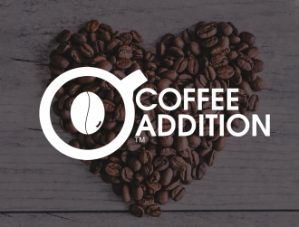

COFFE ADDICTION 2026: ¡HARDY ESTARÁ ALLÍ!
"The place to be: la innovación a medida de los negocios.” Del 18 al 22 de octubre de 2019 Milán será el punto de referencia para todo el mundo de la restauración y la hospitalidad.


"The place to be: la innovación a medida de los negocios.” Del 18 al 22 de octubre de 2019 Milán será el punto de referencia para todo el mundo de la restauración y la hospitalidad.
"The place to be: la innovación a medida de los negocios.” Del 18 al 22 de octubre de 2019 Milán será el punto de referencia para todo el mundo de la restauración y la hospitalidad.
Nuestra bebida favorita tiene mil vidas: no solo reactiva la concentración y nos ayuda a afrontar con lucidez nuestros compromisos, sino que puede utilizarse de muchas otras maneras.